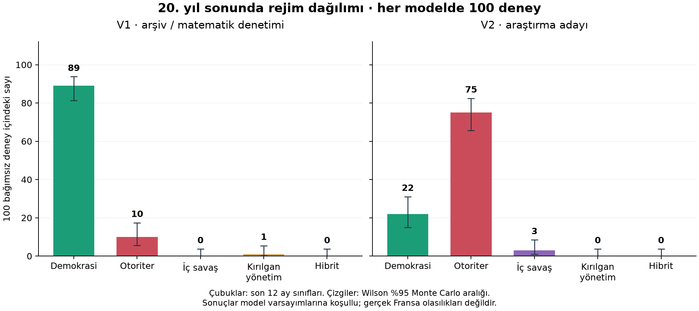

SİYASET VE TOPLUM / ETMEN TABANLI ARAŞTIRMA
01 / 2026 — 2045
Devrimden Sonra
20 Yıl
100 ayrı deney. Yirmi yılın sonunda hangi yönetimler?
Bir düşünce deneyi. Varsayımsal bir Fransa senaryosudur. Gerçek Fransa’nın geleceğini tahmin etmez. Bütün katsayılar kalibre edilmemiş varsayımlardır; sonuçlar bu varsayımlara koşulludur.
Hesaplanan 100 deney yükleniyor…
Aralık yalnızca tohumlar arası örnekleme değişkenliğini ölçer; modelin gerçek dünyaya ilişkin doğruluğunu ölçmez.
AYLIK GÖSTERGELER
Seçili tek deneyin yirmi yılı
Bu grafik tek deneye aittir; 100 deney ortalaması değildir.
Ay 0 başlangıç anıdır. Son ay Aralık 2045’tir. Rejim, son 12 ayın ortalamasıyla sınıflanır.
20 yılın sonunda: bütün deneylerin dağılımı
100 ayrı deneyin son rejim dağılımı
Seçili model ve başlangıç koşulu. Son 12 ay ortalamalarıyla sınıflanır; ortalama yol sınıflandırılmaz.
Ay 240 · deneyler arası dağılım
Aylar boyunca %10, medyan ve %90
Deney bazında sonuç tablosunu aç
Yıllık olay defteri
Zaman çizgisinde seçili deney
Sonucu hangi varsayımlar değiştiriyor?
Tek etkenli tarama aynı tohumları kullanır. Farklar temel yapılandırmaya göredir; etkileşimleri veya gerçek dünya nedenselliğini ölçmez.
Alternatif başlangıçlar ve kurumların devamı
Kontrol aynı mekanizmaları korur; devrimin nedensel etkisini ölçmez.
Her başlangıç koşulunda 100 deney
Sayısal sınırlama: sınırda birikme
Endekslerin 0 ve 1’e kırpılması güçlü geri beslemelerle sınırda birikmeye yol açar. Bu sayısal etki, gerçek toplumda kesinlik anlamına gelmez.
V1: sınırda yığılma neden oluştu?
V1 değiştirilmeden denetlendi. 89/100 deneyde ortak uç duruma varış; ilk varış medyanı 75. ay. 80. aydan sonraki özgürlük kayıtlarının %93,6’sı tam 0 veya 1’de. Bu sayılar gerçek rejim olasılıkları değildir.
Grafik tek bir deneye aitti. Ancak sorun tek deneye özgü değildi: V1’in dışarı yönlü sürüklenmesi ve clip sınırlandırması yapay köşe çekicileri oluşturuyordu.

Denetim raporu yükleniyor…
Açık model, açık varsayımlar
160 sentetik etmen ve dokuz rol. V1 ve V2 aynı önceden belirlenmiş rejim eşiklerini kullanır. Model sürümleri farklı varsayımlar içerir; sonuç payları ampirik doğruluk karşılaştırması değildir.
V2’de x'=(1−k)x+k·sigmoid(u+ε). Artış mevcut boşluğa, kayıp mevcut miktara bağlıdır. Böylece 0 ve 1 sınırları dışa kırpılmaz; sonlu itki altında içeri hareket vardır. Krizler üç ayrı kalıcı baskı sürecini etkiler. Bu yapısal düzeltmeler de ampirik validasyon yerine geçmez.
Son 12 ay ortalamalarıyla sıralı sınıflama: şiddet ≥ 0,60 ise iç savaş; yoğunlaşma ≥ 0,70, özgürlük ≤ 0,35 ve bağımsızlık ≤ 0,35 ise otoriter; yoğunlaşma ≤ 0,45, özgürlük ≥ 0,65, bağımsızlık ≥ 0,60 ve şiddet < 0,20 ise demokrasi; bağımsızlık < 0,30 ise kırılgan; diğer durumlar hibrit.
Model belgesi yükleniyor…
Deneyi yanında götür
JSON; parametreler, tohumlar, aylık kayıtlar, olaylar ve sonuçları birlikte içerir. CSV dosyaları UTF-8 olarak indirilir.